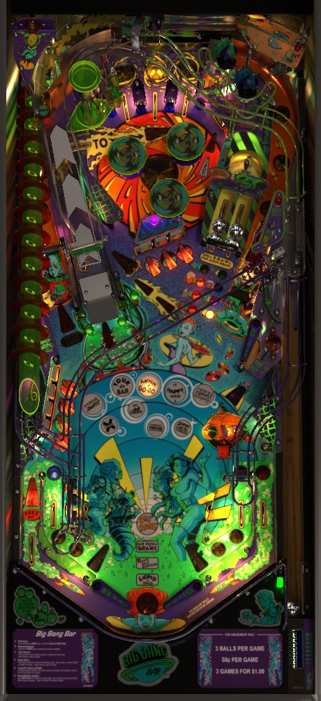

If you're playing Big Bang Bar for score, nothing compares to the value of Looped in Space 2-ball multiball. Complete the drop target banks once each to light locks at the ramp; in multiball, keep shooting the drop targets for increasing jackpots. For game progression, hit any center drop target followed by the ramp to play a mode, and shoot captive balls to qualify Multibrawl 3-ball multiball (for any hit) and Ray's Ball Busters awards (for moving all 4 balls from the flashing side to the unlit side).
The below picture of Big Bang Bar's playfield was taken from the VPX recreation by VPin Workshop.

Two flavors of skill shot are available.
For the normal skill shot, full plunge to the top lanes. One top lane will be flashing, and it can be moved in either direction with flipper lane change. Make the flashing top lane to score the skill shot, which is worth 2,000,000 the first time it is made, increasing by 1,000,000 each time. If you made this skill shot without using lane change to move the flashing lane, you get a further award of 1,000,000 for a Nudged Skill Shot, similar to the Hands Free Skill Shot available on some Stern Pinball games.
For the secret skill shot, short plunge the ball so that it comes down the right orbit toward the upper right flipper, then use the upper right flipper to shoot the Inner Orbit that goes around the bumpers and hits the "1-bank" drop target above-right of the bumpers. If you do this without hitting any other switches along the way, you score a Secret Skill Shot worth 10,000,000 points.
Missing either skill shot awards 100,000 points.
There are 2 ways to qualify a mode. Hitting any drop target in the center 3-bank (or the standup target behind the 3-bank) qualifies a mode until the left ramp is shot or the ball ends. Making the lit in lane qualifies a mode for a few seconds. Hitting pop bumpers when no mode is qualified or running changes which mode is selected. Shooting the left ramp when a mode is qualified starts the selected mode. Modes cannot be stacked with each other. There are 9 main modes to play, and a mode cannot be replayed until all 9 have been played. Most modes are timed; despite timed modes all being about 35 seconds in length by default, they tend to feel shorter than modes in other games, due to the timer not stopping when the ball is in the pop bumpers or when DMD animations are telling you what to do or what you've scored. Shots to the ramp that start modes are dropped into the left in lane; this occurs before the DMD actually displays the rules of the mode, so it's very helpful to know in advance how these work.
Get Lucky possible mystery awards, as listed in the game manual:
Playing all 9 modes is one of the requirements for playing Big Bang wizard mode. You do not need to succeed at the modes in any capacity, just start them. Contrary to popular belief, completing all 9 modes is NOT what lights the Bar Room Brawl insert near the flippers- that requires playing Multibrawl, explained in the next section.
Big Bang Bar has 5 non-mode features that are qualified and played completely separately from the 9 main modes. Playing all 5 of these features is required for qualifying Big Bang wizard mode.
Hit any captive ball in the upper right structure to add a letter to BRAWL. Spelling Brawl lights locks at the left ramp; these locked balls are held just above the left in lane. Lock 3 balls to start Multibrawl.
During Multibrawl, jackpots are scored at the left ramp or the Inner Orbit. Ramp jackpots always score 10,000,000 and Inner Orbit jackpots are always double jackpots which score 20,000,000. There does not seem to be any way to increase these jackpots. Double or triple jackpots are available by shooting the ramp with two or three balls in quick succession. The Inner Orbit double jackpot is available at any time; after making 6 jackpots at the ramp, you must make an Inner Orbit double jackpot to relight the ramp for 6 more regular jackpots. Main modes can still be qualified or started during Multibrawl, so a ramp shot that collects a jackpot will often start a new mode too. There is no ball save of any kind at the start of multiball.
In the upper right, there are 4 captive balls in a U-shaped structure. Both sides of the U can be hit, which causes one captive ball to move from one side to the other. One side of the structure will be flashing. Shoot the captive ball that is flashing with the goal of moving all 4 captive balls to the non-flashing side. Moving one captive ball from the flashing side fo the non-flashing side scores 2,000,000. Getting all 4 captive balls on the non-flashing side awards 20,000,000 points the first time it is achieved, increasing by 10,000,000 each subsequent time, and also lights the Ray's Ball Busters insert near the flippers.
The Looped in Space jackpot starts at 35,000,000 points. Completing the left 4-bank of drop targets and the center 3-bank of drop targets each light an alien lock on the ramp, indicated in the very top right of the game. Completing a bank of drop targets when that bank's respective alien lock is already lit or has already been made adds 5,000,000 to the Looped in Space jackpot, Make both alien locks to start Looped in Space 2-ball multiball.
During multiball, continue to shoot drop targets. Each target down in either bank scores 1/10 of the current jackpot value. Completing both banks scores the entire jackpot, then adds 5,000,000 to that jackpot and resets both banks. There is no meaningful limit to this jackpot- it can reach at least 120,000,000- and it never resets over the course of the game. Also, the alien locks never get harder to light or make, so Looped in Space Multiball is likely the most lucrative reward-to-risk ratio in the game. Like Multibrawl, there is no ball save at the start of multiball, and main modes can be qualified or started as normal during multiball.
Shoot the Inner Orbit from the upper flipper to knock down the 1-bank drop target 4 times to start Underground mode. Underground is a 30-second mode where the 1-bank drop target stays down, allowing an Inner Orbit shot to feed back to the upper flipper and be loopable. The first Inner Orbit shot during this mode scores 10,000,000, with each further Inner Orbit shot scoring 2,000,000 more than the previous.
If you manage to make an Inner Orbit shot without being in Underground mode by sneaking around the 1-bank drop target, you score 5,000,000 points. This does not contribute to the Underground mode's completion.
Shoot the three green standup targets- one on either side of the left ramp, and one that is sort of next to the ramp and meant to be shot with the upper flipper- to start Tube Dancer. For your first Tube Dancer, only the two post targets need to be hit. Shooting the ramp itself will also sometimes spot one of the green targets. When Tube Dancer begins, you're given 35 seconds to shoot the ramp again. The ramp award constantly rotates between Hurry-Up Extra Ball, 10,000,000, and Hurry-Up Jackpot; shoot the ramp to earn the selected award and light the Tube Dancer insert near the flippers.
Hurry-Up Extra Ball gives you the remainder of the 35 seconds to hit the 1-bank drop target near the bumpers for an extra ball. This can be collected repeatedly.
10,000,000 scores the points and instantly ends the mode.
Hurry-Up Jackpot gives you the remainder of the 35 seconds to shoot the ramp repeatedly, earning 10,000,000 the first time with each subsequent shot scoring 2,000,000 more than the previous.
As a minor content warning: at least when the game is set to adult mode, the Tube Dancer is incredibly lewd, frequently moaning or making sexual innuendo when shooting the ramp or any of the green targets.
After playing all 9 main modes and all 5 non-mode features, shoot the 1-bank drop target near the bumpers to start Big Bang wizard mode. (Everything else in the game will unlight until you do.) This is a 4-ball multiball that starts with 30 seconds of unlimited ball saver. There is no autoplunger on Big Bang Bar, so plunge balls as often as you can. Every switch in the game scores 543,210 points times the number of balls in play (except for the spinner, which seems to score about 55,000 times the number of balls in play per spin). You also get 5,000,000 points times the number of balls in play for shooting the ramp, 2,000,000 times the number of balls for completing the center drop targets, 4,000,000 times the number of balls for completing the left drop targets, and 8,000,000 times the number of balls for making an Inner Orbit shot. Balls that are left in the shooter lane do not count as balls in play, which is why you want to always be plunging. Big Bang wizard mode lasts until there is only 1 ball in play and the ball save timer has expired, at which point all progress on the modes and the non-mode features is reset, allowing for another lap through the game's progression.
Shooting the left ramp when it is not lit to start a mode or lock any balls awards one trip to the Bathroom. An award is given after every 3 trips to the Bathroom. There are 8 awards, always given in the same order. When you collect all 8, the sequence resets, but each award now requires 4 trips to the Bathroom instead.
The game keeps track of players with the most Bathroom visits on a leaderboard and allows you to enter your initials accordingly.
Big Bang Bar has a conventional in/out lane setup. In lanes are lit alternately using flipper lane change; making the lit in lane qualifies a mode at the left ramp for a few seconds. The left out lane has a kickback which is on at the start of the ball, unlights when used, and is relit by shooting the right saucer. Draining very shortly after the kickback is used- regardless of whether the drain was caused by a kickback malfunction or not- will give the ball back as a ball save. The right out lane is lit for Special as the 8th and final Bathroom award.
Base bonus is calculated as a count of switch hits. The manual indicates that performing intended tasks during main modes or features such as Ray's Ball Busters gives extra increases to the bonus, but the amount of bonus increase is not confirmed (and the manual is wrong about the point value of quite a few other things, perhaps due to being based on a version of the code older than 1.8). You also get 1,000,000 points of base bonus for each main mode you started on the most recent ball in play. The base bonus is multiplied by the bonus multiplier, which is advanced one at a time up to 5x by completing the BAR top lanes or advanced directly to 10x by Get Lucky mystery award. If you've played a few modes and get to 5x or 10x multiplier, the end of ball bonus can be very lucrative (25-100 million), but on a short ball with no modes started or multipliers earned, it's not very meaningful.
Extra ball and Special can be set to a point value in competition/novelty play, but I have not confirmed what that value is.
The ball save at the start of the ball can be set to anywhere from 0-60 seconds; default is 7. The ball save from Get Lucky can be set to 5-25 seconds, and defaults to 15.
Settings exist allowing ball saves immediately after using the kickback, shooting the right saucer, or making a "halfway" shot up the ramp. By default, the kickback and saucer ball saves are on, but the ramp ball save is not.
The kickback can have its status preserved from ball to ball instead of being lit for free every ball.
The number of Bathroom shots required for each award can be anywhere from 1 to 10.
Timed modes can be set to last anywhere from 10 to 120 seconds. Default is 35.